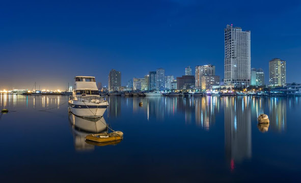
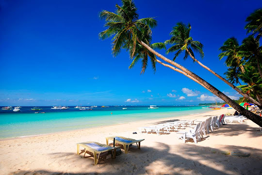
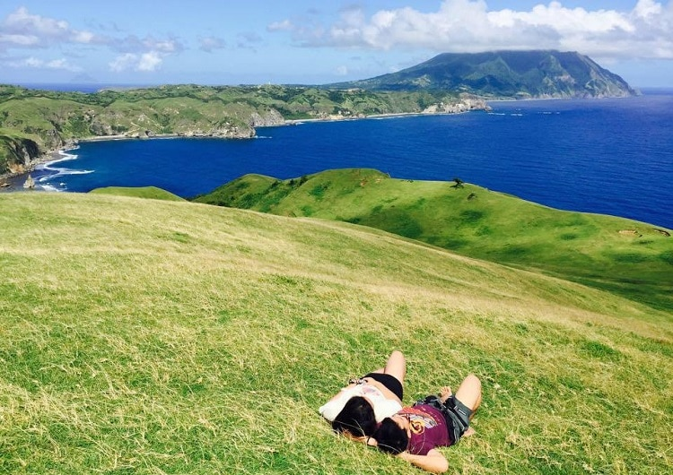
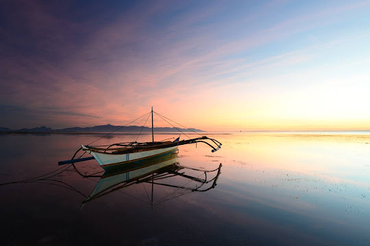

Manila

Manila - The city with soul
Metropolitan Manila encompasses six cities and 12 towns.
Located on Manila Bay in the South China Sea, and bisected
by the Pasig River, the capital of the Philippines is historic
and modern, rich and poor. A popular sight is the walled area
called Intramuros. The capital during Spanish colonization,
Intramuros has retained old dungeons and gunpowder rooms but
added art galleries and theaters. The city is filled with museums,
shops, parks and churches, plus enough nightlife to last until dawn.
Boracay

Boracay a place you want to go
Boracay is an island paradise. It is a beautiful small
island surrounded by coral reefs and located one km north-west
of Panay island in Visayas of the Philippines. It is the most popular
beach in the country as the most visited tourist spot in the Philippines.
Before the middle of 1980s, it was a famous hidden resort but known to
limited numbers of sea lovers. Now many tourists visit there from all
over the world, America, Europe, korea, Taiwan and so on. The climate
from March to June are the summer months in Boracay, with temperatures
ranging from 28 to 38 degrees Celsius. November to February bring enjoyable
winds, cooler temperatures, and occasional rain showers.
July to October are the rainy months. No other beaches can compete in this
one of our famouse tourist spot.
Batanes Islands, Batanes

Batanes for the win!
one of the most wanted
tourist destinations in the
Philippines. A trip to the province will
give you the most unique sceneries of the country,
which include unspoiled islands that will satisfy nature
lovers, livestock freely roaming above endless green hills,
massive cliffs overlooking oceans under the blue skies, rocky shores
and white sand beaches, and the rich cultural heritage of the Ivatans.
Camiguin Island, Camiguin

Number 4!
This province holds the record of having
the most number of volcanoes per square kilometer
than any other island on the planet. But beyond volcanoes,
the province also boasts natural attractions, including an
uninhabited white sandbar, hot and cold springs, and waterfalls.
Moreover, you can also witness the Lanzones festival in October,
visit centuries-old churches, old ancestral homes and the infamous
sunken cemetery.
Malapascua Island, Cebu

Mahh Favorite Place
Along with Palawan and Boracay, the island of Cebu is
also considered one of the top 20 best islands in the
world by Condé Nast Traveller magazine. A month isn’t
enough to explore the whole of Cebu, which is known for
its white beaches, luxury resorts, and rich history.
Malapascua Island is one of the most popular destinations
in Cebu. The small island which can be walked around in two
hours is home to lovely beaches and relaxing breeze of air.
Tourists visit the island for a once-in-a-life time diving
experience with the thresher sharks.